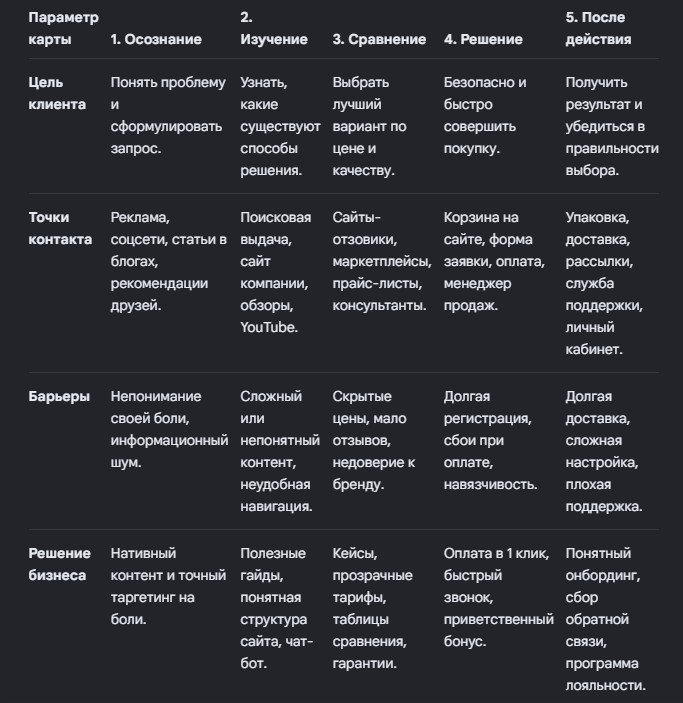

Дизайн начинается с вопроса
Открыть Figma и начать рисовать — самое простое. Самое сложное — понять, для кого и зачем. Без этого макет превращается в самовыражение дизайнера, а не в инструмент бизнеса.
UX-исследование — это способ снизить риск. Вместо «мне кажется, пользователю будет удобно» — «я знаю, потому что проверил». Даже минимальное исследование экономит недели переделок.
Пять интервью с реальными клиентами дают больше, чем месяц догадок в одиночку.
User Personas
Персона — это обобщённый портрет типичного пользователя на основе реальных данных. Не «женщина 25–45», а конкретный образ с именем, профессией, целями и раздражителями.
Хорошая персона отвечает на четыре вопроса:
- Кто он? Возраст, занятость, цифровая грамотность.
- Чего хочет? Задача, с которой пришёл на сайт.
- Что мешает? Боли, страхи, сомнения.
- Как принимает решение? Что важно: цена, скорость, доверие.
С персоной спорить сложнее, чем с коллегой. «Мне не нравится этот цвет» превращается в «поможет ли это Марине найти контакт за 10 секунд».
Customer Journey Map
CJM — карта пути пользователя от первого касания с брендом до целевого действия. Она показывает, что человек делает, думает и чувствует на каждом этапе.

Типичные этапы для рекламного сайта:
- Осознание. Видит рекламу, попадает на сайт.
- Изучение. Сканирует первый экран, проверяет, туда ли попал.
- Сравнение. Смотрит цены, отзывы, кейсы.
- Решение. Заполняет форму, звонит, оформляет заказ.
- После действия. Получает подтверждение, ждёт ответа, возвращается.
На каждом этапе дизайнер задаёт вопрос: что здесь может сломаться? Непонятный заголовок, скрытая цена, длинная форма — всё это точки потери.
Конкурентный анализ
Анализ конкурентов — это не копирование, а карта поля. Он показывает, что уже стало стандартом, а где есть пространство для дифференциации.
Что смотреть:
- Первый экран. Что обещают и как быстро это видно.
- Навигация. Сколько разделов, как глубоко спрятаны ключевые страницы.
- Формы и CTA. Сколько полей, какие кнопки, что после клика.
- Тон. Официальный, дружеский, агрессивный.
- Слабые места. Медленная загрузка, неудобная мобильная версия.
Конкурентный анализ — источник гипотез для A/B-тестов. Если у всех форма из пяти полей, а у вас из двух — это не значит, что вы хуже. Это значит, что у вас есть гипотеза.
Информационная архитектура
IA — это скелет сайта: какие разделы существуют, как они связаны, что на верхнем уровне, а что глубже. Она отвечает на вопрос «где живёт каждая единица контента».
Инструменты IA:
- Карта сайта. Иерархия всех страниц и разделов.
- Сортировка карточек. Пользователи сами группируют контент — так выявляются естественные категории.
- Дерево навигации. Проверка, насколько быстро находится ключевая страница по названию меню.
Плохая IA — частая причина высокого показателя отказов. Пользователь не должен угадывать, где лежит нужное. Если цена спрятана за тремя уровнями меню — архитектура не работает.
Итог
Исследования дают дизайнеру язык для разговора с бизнесом: не «красиво / некрасиво», а «работает / не работает для конкретного пользователя на конкретном этапе». Персоны, CJM, конкурентный анализ и IA — фундамент, на котором строится прототип.